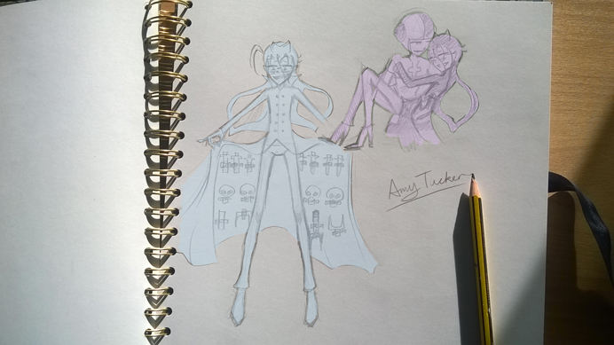

Okay I am going to be posting a lot of hand drawn sketches so I’m not really going to say all that much about each one but I will say a little bit so here we goooooooooooooooooo!!!!
This is a cute little sketch I done a few weeks ago I think? It is of characters from my comic Mystery Club! Look I don’t mean to show of or sound annoying right now, BUT I THINK I DONE A PRETTY DAMN GOOD JOB TAKING THIS PICTURE AND EDITING IT!!!
Okay people, let’s all just consider the fact that I’m not a photographer or an editor and let’s all just look at the picture again with that in mind! Pretty good, isn’t it?!! RIGHT!! Right!? Right…?………………….
Okay find if you’re going to be like that then I’ll just leave…
*walks away then starts crying then shouts…*
HOPE TO SEE YA IN MY NEXT BLOG POST, YOU BETTER APPRECIATE AMY’S EDITING SKILLS!!!
Amy